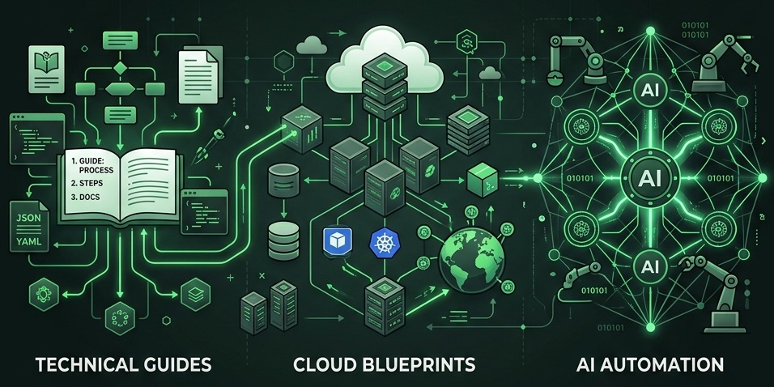

UVF IT
Build a Python Agent Harness with Harness‑SDK
A tiny, free‑tier clone of Strands Agents Harness‑SDK
Read Blueprint
Step-by-step “build it yourself” guides for self-hosted tools, AI-powered automations, and developer-grade clones — from analytics trackers to local-first AI agents.

A tiny, free‑tier clone of Strands Agents Harness‑SDK
A minimal clone of CatQueue built in ~45 min with Node and Postgres
A lightweight Python/Flask prototype inspired by video‑use
A quick‑start guide to build a local command‑line assistant using Claude‑style prompts
A minimal Python‑SQLite clone of AutoClip in 45 minutes
A minimal TypeScript app that mimics a chat‑agent using shared actions
A minimal Termphin‑style SSH client that keeps sessions alive
A 45‑minute beginner clone of Paperless‑ngx
A minimal clone of Docling using free‑tier Python stack
A minimal TypeScript/Node.js app that streams live prices using a free stock API
A minimal personal search engine in 45 minutes
A minimal clone of GitDiagram using Node, Express, and SQLite
Build a local voice cloning & TTS studio with Node.js and Whisper
Build a minimal WeKnora-inspired document Q&A engine in Python
Create a lightweight A/B testing tool that lets you split traffic, track conversion metrics, and visualize results — the kind of tool that a startup needs to make data-driven decis
Build a lightweight vector database for AI context sharing
Track your physical books with shelf locations using Python and SQLite
Build a minimal, client-side encrypted paste app where the server never sees plaintext
Detect price hikes in your bank transactions with Python and SQLite
Build a local tool that slices videos into clips using Python and FFmpeg.
Find forgotten subscriptions by scanning local email data
Build a LocalSend-inspired LAN file sharing app with Python and WebSockets
Build a lightweight, server-side rendered blog in 45 minutes using Node.js and SQLite.
Turn local files into LLM-ready prompts in 45 minutes
Build a minimal timer sequence app with React and SQLite
Turn reference photos into printable drawing grids
Detect text vs scanned PDFs and extract content in under 45 minutes
Build a private, local AI gallery inspired by ImageSage
Build a WeTransfer-inspired file sharing app with tracking in 45 minutes
Build a Python script to automate privacy opt-outs
Turn your commits into a thermal-paper style receipt
Track live aircraft on a 3D globe with Python and Cesium.
Paste messy HTML, get clean text back.
The product editor for product builders
Build a private, full-text search index for your local files in 45 minutes.
Automate job filtering and cover letter drafting locally with Python and SQLite.
Clone the workflow: scrape, evaluate, and tailor applications locally.
Turn short videos into searchable text in minutes
A lightweight, self-hosted password vault API inspired by Vaultwarden.
Build a ComfyUI-inspired workflow engine in 45 minutes